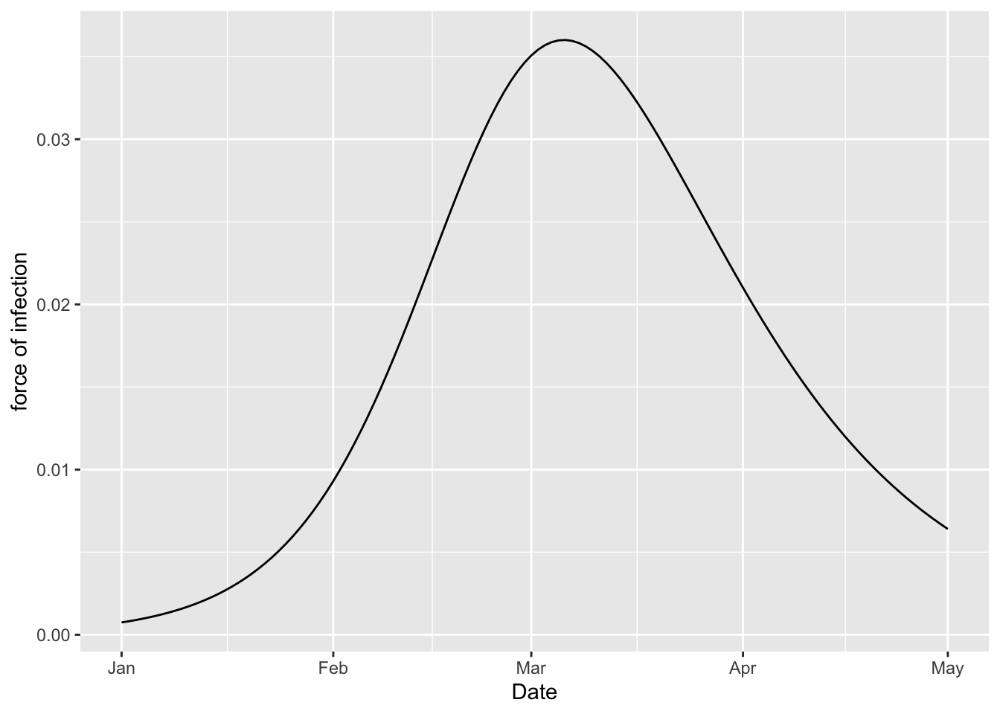
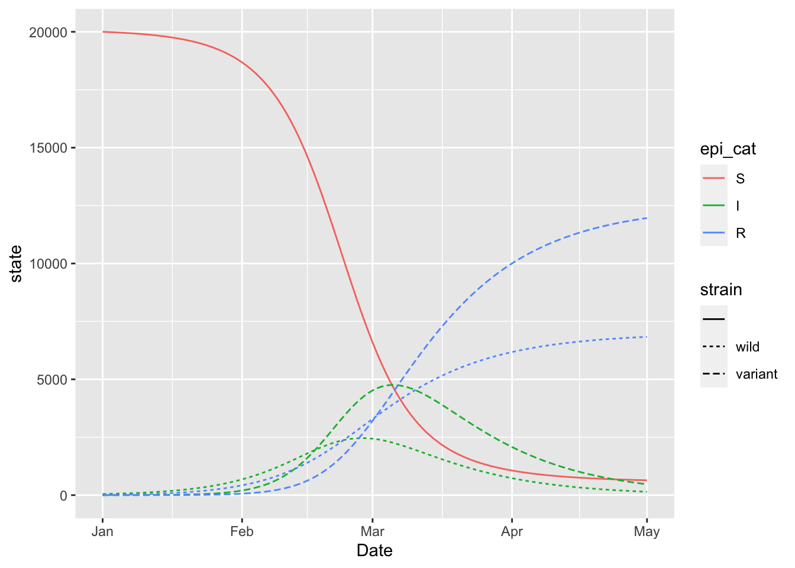
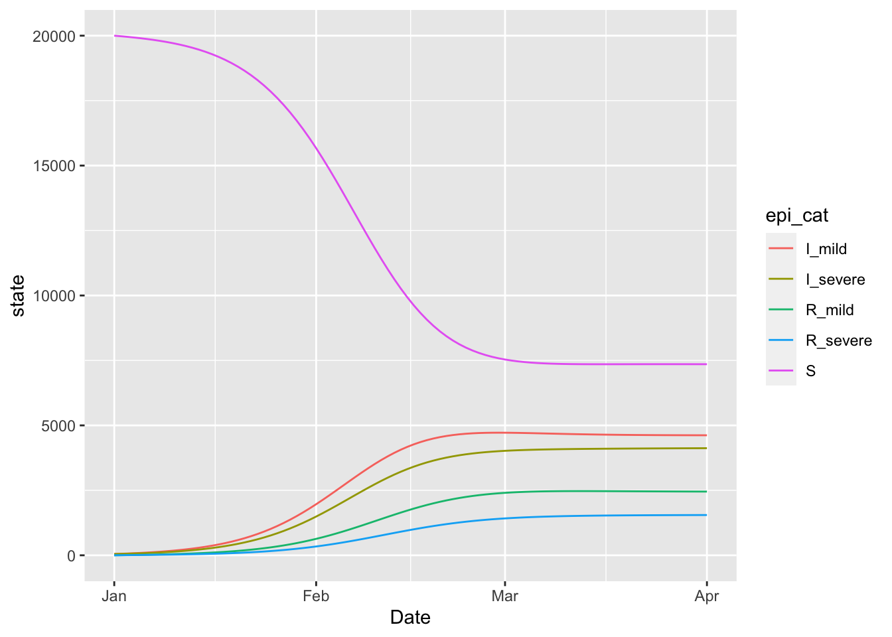

Chapter 11 Examples

library(dplyr)
library(tidyr)
library(lubridate)11.1 Hello World: Simulating an SIR Model
state = c(S = 20000, I = 100, R = 0)
sir_model = (
flexmodel(
params = c(
gamma = 0.06,
beta = 0.15,
N = sum(state)
),
state = state,
start_date = "2000-01-01",
end_date = "2000-05-01",
do_hazard = TRUE
)
%>% add_rate("S", "I", ~ (1/N) * (beta) * (I))
%>% add_rate("I", "R", ~ (gamma))
)
sir_model## from to n_fctrs n_prdcts n_vrbls state_dependent time_varying
## S_to_I S I 3 1 3 TRUE FALSE
## I_to_R I R 1 1 1 FALSE FALSE
## sum_dependent
## S_to_I FALSE
## I_to_R FALSE(sir_model
%>% simulate_state_vector(add_dates = TRUE)
%>% pivot_longer(!Date)
%>% rename(state = value, epi_cat = name)
%>% ggplot
+ geom_line(aes(x = Date, y = state, colour = epi_cat))
)
(sir_model
%>% simulate_changing_ratemat_elements(add_dates = TRUE)
%>% rename(`force of infection` = S_to_I)
%>% ggplot
+ geom_line(aes(x = Date, y = `force of infection`))
)
11.2 SEIR
state = c(S = 20000, E = 0, I = 100, R = 0)
seir_model = (
flexmodel(
params = c(
alpha = 0.05,
gamma = 0.06,
beta = 0.15,
N = sum(state)
),
state = state,
start_date = "2000-01-01",
end_date = "2000-05-01",
do_hazard = TRUE,
)
%>% add_rate("S", "E", ~ (1/N) * (beta) * (I))
%>% add_rate("E", "I", ~ (alpha))
%>% add_rate("I", "R", ~ (gamma))
)
seir_model## from to n_fctrs n_prdcts n_vrbls state_dependent time_varying
## S_to_E S E 3 1 3 TRUE FALSE
## E_to_I E I 1 1 1 FALSE FALSE
## I_to_R I R 1 1 1 FALSE FALSE
## sum_dependent
## S_to_E FALSE
## E_to_I FALSE
## I_to_R FALSE11.3 Structure: Two-Strain SIR
strains = c("wild", "variant")
state = c(
S = 20000,
I_wild = 49, I_variant = 1,
R_wild = 0, R_variant = 0
)
two_strain_model = (
flexmodel(
params = c(
gamma = 0.06,
beta_wild = 0.15,
beta_variant = 0.25,
N = sum(state)
),
state = state,
start_date = "2000-01-01",
end_date = "2000-05-01",
do_hazard = TRUE
)
%>% vec_rate(
"S",
"I" %_% strains,
vec("beta" %_% strains) * struc("1/N") * vec("I" %_% strains)
)
%>% rep_rate("I", "R", ~ (gamma))
)regex = "^(S|I|R)(_*)(.*)"
(two_strain_model
%>% simulate_state_vector(add_dates = TRUE)
%>% pivot_longer(!Date)
%>% rename(state = value)
%>% mutate(strain = sub(pattern = regex, replacement = "\\3", name))
%>% mutate(epi_cat = sub(pattern = regex, replacement = "\\1", name))
%>% ggplot
+ geom_line(aes(x = Date, y = state, colour = epi_cat, linetype = strain))
)
(two_strain_model
%>% simulate_changing_ratemat_elements(add_dates = TRUE)
%>% pivot_longer(starts_with("S_to_I"))
%>% mutate(name = sub("S_to_I_", "", name))
%>% rename(`force of infection` = value)
%>% rename(strain = name)
%>% ggplot
+ geom_line(aes(x = Date, y = `force of infection`, colour = strain))
)
11.4 Erlang SEIR
David, Jonathan, and David describe the Erlang SEIR model in continuous time. Here is a discrete time version of it.
n = 4 # number of I states
m = 6 # number of E states
erlang_seir = (flexmodel(
# FIXME: only working for no demography (so mu = 0 for now)
params = c(mu = 0, beta = 1.5, m = m, n = n,
gamma = 1.2, sigma = 0.1),
state = c(
S = 1-1e-3,
layered_zero_state("E" %_% 1:m),
I_1 = 1e-3,
layered_zero_state("I" %_% 2:n),
R = 0,
D = 0,
. = 1),
start_date = "2000-01-01",
end_date = "2000-04-01",
do_hazard = TRUE
)
%>% add_state_param_sum("I", "^I_[0-9]+")
# birth
%>% add_rate(".", "S", ~ (mu))
# death
%>% rep_rate(
from = c("S", "E" %_% 1:m, "I" %_% 1:n, "R"),
to = "D",
formula = ~ (mu))
# infection
%>% add_rate("S", "E_1", ~ (beta) * (I))
# become infectious
%>% add_rate("E" %_% m, "I_1", ~ (m) * (sigma))
# sojourn through exposed compartments
%>% rep_rate(
"E" %_% 1:(m-1),
"E" %_% 2:m,
~ (m) * (sigma)
)
# sojourn through infectious compartments
%>% rep_rate(
"I" %_% 1:(n-1),
"I" %_% 2:n,
~ (n) * (gamma)
)
# recovery
%>% add_rate("I" %_% n, "R", ~ (n) * (gamma))
# nothing flows out of . because it is a dummy
# state used to generate flows that are not per-capita
%>% add_outflow("[^.]")
)
(erlang_seir
%>% simulate_state_vector(add_dates = TRUE)
%>% select(-., -D)
%>% pivot_longer(-Date, names_to = "State", values_to = "Count")
%>% mutate(State = sub("_[0-9]+", "", State))
%>% group_by(Date, State)
%>% summarise(Count = sum(Count))
%>% ungroup
%>% ggplot() + geom_line(aes(Date, Count, colour = State))
)## `summarise()` has grouped output by 'Date'. You can override using the
## `.groups` argument.
# check to make sure that the population density
# remains constant at one
(erlang_seir
%>% simulate_state_vector(add_dates = FALSE)
%>% select(-., -D)
%>% rowSums
%>% sapply(all.equal, 1L)
%>% sapply(isTRUE)
%>% all
)## [1] TRUE11.5 The SIRV model
state = c(S = 20000, I = 100, R = 0, V = 0)
params = c(
gamma = 0.06,
beta = 0.15,
v = 0, # initial vaccination rate
N = sum(state)
)
# roll out the vaccine by bumping the
# vaccination rate twice
params_timevar = data.frame(
Date = c("2020-02-01", "2020-03-01"),
Symbol = c("v", "v"),
Value = c(0.01, 0.1),
Type = c("abs", "abs"))
sirv_model = (
flexmodel(
params = params,
state = state,
params_timevar = params_timevar,
start_date = "2020-01-01",
end_date = "2020-05-01",
do_hazard = TRUE
)
%>% add_rate("S", "I", ~ (beta) * (1/N) * (I))
%>% add_rate("I", "R", ~ (gamma))
%>% add_rate("S", "V", ~ (v))
)
(sirv_model
%>% simulate_state_vector(add_dates = TRUE)
%>% pivot_longer(!Date)
%>% rename(state = value, epi_cat = name)
%>% ggplot
+ geom_line(aes(x = Date, y = state, colour = epi_cat))
+ geom_vline(aes(xintercept = as.Date(Date)), data = params_timevar, colour = 'lightgrey')
)
11.6 Variolation model
state = c(
S = 20000,
I_severe = 50, I_mild = 50,
R_mild = 0, R_severe = 0
)
params = c(
nu = 0.0105, # birth rate
mu = 0.0105, # death rate
delta = 1/7, # waning immunity rate
gamma_mild = 1/(3.3 + 9), # recovery rate of mild cases
gamma_severe = 1/(3.3 + 14), # recovery rate of severe cases
beta_mild = 0.15, # transmission rate of infections leading to mild cases
beta_severe = 0.3, # transmission rate of infections leading to severe cases
m = 0.6 # probability of developing mild illness
)
# model structure
all_states = names(state)
severity = c("mild", "severe")
beta_vec = vec("beta" %_% severity)
I_vec = vec("I" %_% severity)
foi = kronecker(vec("m", "1-m"), sum(beta_vec * I_vec * struc("1/N")))
variolation_model <- (
flexmodel(
params = params,
state = state,
start_date = "2020-01-01",
end_date = "2020-04-01"
)
%>% add_state_param_sum("N", any_var(state))
# births and deaths
# (FIXME: this only works if nu = mu)
%>% rep_rate(
all_states,
"S",
~ (nu)
)
# infection
%>% vec_rate(
"S",
"I" %_% severity,
foi
)
# waning immunity
%>% rep_rate(
"R" %_% severity,
"S",
~ (delta)
)
# recovery
%>% vec_rate(
"I" %_% severity,
"R" %_% severity,
vec("gamma" %_% severity)
)
)
(variolation_model
%>% simulate_state_vector(add_dates = TRUE)
%>% pivot_longer(!Date)
%>% rename(state = value, epi_cat = name)
%>% ggplot
+ geom_line(aes(x = Date, y = state, colour = epi_cat))
)
11.7 SEIRD Model
This is the Mac Theo Bio Model.
{kind=link}
state = c(S = 20000, E = 50, I = 50, R = 0, D = 0, Null = 0)
params = c(
# transmission rates of susceptibles from live and dead individuals
beta_I = 5,
beta_D = 2,
# average times in various boxes
T_E = 10,
T_I = 14,
T_D = 10,
# probability of death given infection
f = 0.5
)
seird_model = (
flexmodel(
params = params,
state = state,
start_date = "2000-01-01",
end_date = "2000-03-01",
do_hazard = TRUE
)
%>% add_state_param_sum("N", any_var(state))
%>% add_rate("S", "E", ~ (beta_I) * (1/N) * (I) + (beta_D) * (1/N) * (D))
%>% add_rate("E", "I", ~ (1/T_E))
%>% add_rate("I", "R", ~ (1/T_I) * (1 - f))
%>% add_rate("I", "D", ~ (1/T_I) * (f))
%>% add_rate("D", "Null", ~ (1/T_D))
)
(seird_model
%>% simulate_state_vector(add_dates = TRUE)
%>% pivot_longer(!Date)
%>% rename(state = value, epi_cat = name)
%>% ggplot
+ geom_line(aes(x = Date, y = state, colour = epi_cat))
)
11.8 Covid SEIR
The BC covid modelling group uses this compartmental model for their inference and forecasting work. This model can be expressed in McMasterPandemic with the following.
foi = (
vec(c("1", "f"))
* struc("beta")
* struc("1/N")
* (struc("(I) + (E2)") + (struc("f") * struc("(Id) + (E2d)")))
)
params = c(
N = 5100000,
D = 5,
k1 = 0.2,
k2 = 1,
q = 0.05,
ud = 0.1,
ur = 0.02,
psir = 0.3,
shape = 1.73,
scale = 9.85,
beta = 0.433,
f = 1
)
state = c(
S = 849999,
E1 = 0.53,
E2 = 0.13,
I = 0.67,
Q = 0,
R = 0,
Sd = 4249993,
E1d = 2.67,
E2d = 0.67,
Id = 3.33,
Qd = 0,
Rd = 0
)
base_states = names(state)[1:6]
dist_states = base_states %+% "d"
strats = c("", "d") # distancing strategies
ramp_period = seq(from = ymd(20210315), to = ymd(20210322), by = 1)
time_ratio = rev((seq_along(ramp_period) - 1) / (length(ramp_period) - 1))
f2 = 0.22
params_timevar = data.frame(
Date = ramp_period,
Symbol = rep("f", length(ramp_period)),
Value = f2 + time_ratio * (1 - f2),
Type = rep("abs", length(ramp_period))
)
model = (
flexmodel(
params = params,
state = state,
start_date = "2021-02-01",
end_date = "2021-06-01",
do_hazard = TRUE,
params_timevar = params_timevar
)
# flow between distancing strategies
%>% rep_rate(base_states, dist_states, ~ (ud))
%>% rep_rate(dist_states, base_states, ~ (ur))
# force of infection
%>% vec_rate(
"S" %+% strats,
"E1" %+% strats,
foi
)
# flow within distancing strategies
%>% rep_rate(
"E1" %+% strats,
"E2" %+% strats,
~ (k1)
)
%>% rep_rate(
"E2" %+% strats,
"I" %+% strats,
~ (k2)
)
%>% rep_rate(
"I" %+% strats,
"Q" %+% strats,
~ (q)
)
%>% rep_rate(
expand_names(c("I", "Q"), strats, ""),
expand_names(c("R", "R"), strats, ""),
~ (1/D)
)
)
(model
%>% simulate_state_vector(add_dates = TRUE)
%>% pivot_longer(!Date)
%>% ggplot()
+ facet_wrap(~ name, scales = 'free', ncol = 2)
+ geom_line(aes(Date, value))
)
11.9 BC Covid Omicron
The BC group also developed a model with two strains for the Omicron wave of Covid-19.
DISCLAIMER: This is not meant to illustrate a realistic forecast, but rather to illustrate how the basic model structure can be expressed in McMasterPandemic
params = c(
sigma=1/3, # incubation period (3 days) (to fixed)
gamma=1/(5), #recovery rate (fixed)
nu =0.007, #vax rate: 0.7% per day (fixed)
mu=1/(82*365), # 1/life expectancy (fixed)
w1 = 1/(3*365),# waning rate from R to S (fixed)
w2 = 1/(3*365), # waning rate from Rv to V (fixed)
w3 = 1/(3*365),# waning rate Rw to W (fixed)
ve=1, # I think this should be 1. it is not really efficacy ( fixed)
beta_r=0.72, #transmission rate (to estimate) (0.35)
beta_m=0.8*2.2, #transmission rate (to estimate)(*1.9)
epsilon_r = (1-0.8), # % this should be 1-ve
epsilon_m = (1-0.6), # % escape capacity #(fixed)
b= 0.006, # booster rate (fixed)
beff = 0.7, # booster efficacy
wf=0.2, # protection for newly recoverd #0.2
N=5e6,
E0=5,
S0=1-1e-5,
c=1
)
# dimensions of model structure
vax_states = c("unvax", "onedose", "boost")
variant_states = c("delta", "omicron")
epi_states = c("S", "E" %_% variant_states, "I" %_% variant_states, "R")
# vectors representing variant model structure
I_delta = vec("I" %_% "delta" %_% vax_states)
I_omicron = vec("I" %_% "omicron" %_% vax_states)
E_delta = vec("E" %_% "delta" %_% vax_states)
E_omicron = vec("E" %_% "omicron" %_% vax_states)
# initial state vector
state = layered_zero_state(epi_states, vax_states)
all_states = names(state)
state[] = unname(make_init(params))
print(state)## S_unvax E_delta_unvax E_omicron_unvax I_delta_unvax
## 9.106607e+05 6.480000e+02 1.748571e+01 1.110857e+03
## I_omicron_unvax R_unvax S_onedose E_delta_onedose
## 2.997551e+01 1.014000e+05 3.502789e+06 5.924571e+02
## E_omicron_onedose I_delta_onedose I_omicron_onedose R_onedose
## 1.974857e+01 1.015641e+03 3.385469e+01 3.893760e+05
## S_boost E_delta_boost E_omicron_boost I_delta_boost
## 1.460132e+05 2.468571e+01 8.228571e-01 4.231837e+01
## I_omicron_boost R_boost
## 1.410612e+00 1.622400e+04two_strain_bc = (flexmodel(
params = params,
state = state,
start_date = "2022-01-01",
end_date = "2022-05-01",
do_hazard = TRUE
)
# sum over every vax status to get
# total numbers in I boxes for each
# variant
%>% add_state_param_sum("I_delta", "I_delta_")
%>% add_state_param_sum("I_omicron", "I_omicron_")
# R to S boxes for every vax status
# -- waning
%>% vec_rate(
from = "R" %_% vax_states,
to = "S" %_% vax_states,
vec('w1', 'w2', 'w3')
)
# S_delta to E_delta for every vax status
# -- delta force of infection
%>% vec_rate(
from = "S" %_% vax_states,
to = "E" %_% "delta" %_% vax_states,
struc("(c) * (beta_r) * (1/N) * (I_delta)") * vec("1", "epsilon_r", "epsilon_r")
)
# S_omicron to E_omicron for every vax status
# -- omicron force of infection
%>% vec_rate(
from = "S" %_% vax_states,
to = "E" %_% "omicron" %_% vax_states,
struc("(c) * (beta_m) * (1/N) * (I_omicron)") * vec("1", "epsilon_m", "epsilon_m")
)
# R to E_delta for every vax status
# -- delta force of infection of recovered individuals
%>% rep_rate(
from = "R" %_% vax_states,
to = "E" %_% "delta" %_% vax_states,
~ (wf) * (epsilon_r) * (c) * (beta_r) * (1/N) * (I_delta)
)
# R to E_omicron for every vax status
# -- omicron force of infection of recovered individuals
%>% rep_rate(
from = "R" %_% vax_states,
to = "E" %_% "omicron" %_% vax_states,
~ (wf) * (epsilon_m) * (c) * (beta_m) * (1/N) * (I_omicron)
)
# E to I for all variant-vax combinations
%>% rep_rate(
from = "E" %_% expand_names(variant_states, vax_states),
to = "I" %_% expand_names(variant_states, vax_states),
~ (sigma)
)
# recovery for all variant-vax combinations
%>% rep_rate(
from = "I" %_% expand_names(variant_states, vax_states),
to = "R" %_% rep(vax_states, each = length(variant_states)),
~ (gamma)
)
# demographics
%>% rep_rate(
from = all_states,
to = "S_unvax",
~ (mu)
)
# vaccination
%>% add_rate(from = "S_unvax", to = "S_onedose", ~ (nu) * (ve))
%>% add_rate(from = "S_onedose", to = "S_boost", ~ (b) * (ve))
)
category_pattern = "^(S|E|I|R)(_omicron|_delta)?_(unvax|onedose|boost)$"
(two_strain_bc
%>% simulate_state_vector(add_date = TRUE)
%>% pivot_longer(-Date, names_to = "Compartment", values_to = "State")
%>% mutate(`Epi Status` = sub(category_pattern, '\\1\\2', Compartment, perl = TRUE))
%>% mutate(`Vaccination Status` = sub(category_pattern, '\\3', Compartment, perl = TRUE))
%>% arrange(`Epi Status`, `Vaccination Status`)
%>% mutate(Compartment = factor(Compartment, all_states))
%>% ggplot()
+ facet_wrap(
~ Compartment, ncol = 3, scales = 'free', dir = 'v')
+ geom_line(aes(Date, State))
)11.10 Classic McMasterPandemic
params = read_params("ICU1.csv")
model = (flexmodel(
params = params,
state = make_state(params = params),
start_date = "2020-03-10",
end_date = "2020-12-10",
do_make_state = FALSE,
do_hazard = TRUE
)
%>% add_rate("E", "Ia", ~ (alpha) * (sigma))
%>% add_rate("E", "Ip", ~ (1 - alpha) * (sigma))
%>% add_rate("Ia", "R", ~ (gamma_a))
%>% add_rate("Ip", "Im", ~ (mu) * (gamma_p))
%>% add_rate("Ip", "Is", ~ (1 - mu) * (gamma_p))
%>% add_rate("Im", "R", ~ (gamma_m))
%>% add_rate("Is", "H", ~
(1 - nonhosp_mort) * (phi1) * (gamma_s))
%>% add_rate("Is", "ICUs", ~
(1 - nonhosp_mort) * (1 - phi1) * (1 - phi2) * (gamma_s))
%>% add_rate("Is", "ICUd", ~
(1 - nonhosp_mort) * (1 - phi1) * (phi2) * (gamma_s))
%>% add_rate("Is", "D", ~ (nonhosp_mort) * (gamma_s))
%>% add_rate("ICUs", "H2", ~ (psi1))
%>% add_rate("ICUd", "D", ~ (psi2))
%>% add_rate("H2", "R", ~ (psi3))
%>% add_rate("H", "R", ~ (rho))
%>% add_rate("Is", "X", ~ (1 - nonhosp_mort) * (phi1) * (gamma_s))
%>% add_rate("S", "E", ~
(Ia) * (beta0) * (1 / N) * (Ca) +
(Ip) * (beta0) * (1 / N) * (Cp) +
(Im) * (beta0) * (1 / N) * (Cm) * (1 - iso_m) +
(Is) * (beta0) * (1 / N) * (Cs) * (1 - iso_s))
%>% add_outflow(".+", "^(S|E|I|H|ICU|D|R)")
)
(model
%>% simulate_state_vector(add_dates = TRUE)
%>% pivot_longer(!Date)
%>% ggplot()
+ facet_wrap(~ name, scales = 'free', ncol = 3)
+ geom_line(aes(Date, value))
)